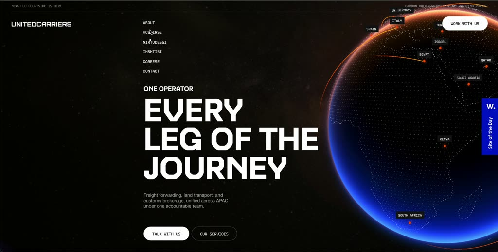
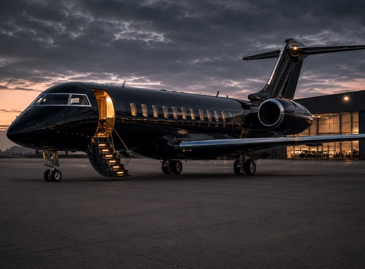

Precision in motion · Type and material study
Every idea.
Engineered
to matter.
Black lacquer. Brushed titanium. Blue light.
One idea carried from strategy to scale.
ManropeDisplay / 600–700
Upright · compact
Upright · compact
DM SansProse & forms / 400–500
Clear · measured
Clear · measured
IBM Plex MonoInstrumentation / 400
Small · precise
Small · precise

A black private jet.
Soft champagne-blue light.
Preserve this aircraft's identity. Replace amber cabin, stair and metallic lighting with pale blue. The flying view will close the door, retract the gear and use a strict overhead silhouette.
Black
#05070A
Carbon
#11151B
Deep blue
#061E3B
Pegasoft blue
#147DFF
Champagne blue
#B9E7FF
Porcelain
#EDF2F7
Accepted: visual direction, static jet family, jet transition/shadow, lift family, the complete cab/wheels/connected lift sequence and the silver container model with front markings. Next: review lift-to-truck handoff, straight departure with services, then the overhead road transition. Current checkpoint is the status authority; final website/content and production-container handoffs remain separate gates.
Reference choreography · Pegasoft story draft
The journey stays continuous.
One silver container becomes the visual thread: construct, deliver, scale, rise. Select a chapter to see the recorded composition and its proposed Pegasoft meaning. These are reference frames, not built section drafts.
Review the lift and container integration.
Accepted transport
Reuse the approved static jet crossing and exact shadow preset. Reuse the lift's closed wheels, coherent glazed cab, constrained hydraulics and connected reference lift/camera/settling sequence. The separate integration now uses the full-size silver C01, picks it up from a stationary lower container, retracts and backs away through a reverse arc while the camera turns. Departure framing now stays stable while following the lift. The current visual integration is accepted, including the fixed grabber and departure camera. Central roof coupling is visual; four-corner mechanics remain unresolved. The truck static family and T01 model v2 are accepted. Open the accepted integration review.
Connected handoff accepted
The generated side, upper and front images are accepted as supplied. The connected journey is accepted at this checkpoint. Preserve the approved assets; stop before production integration. Framing fits the truck from the opening shot and holds through departure and the overhead rotation. The opening is tighter: reverse at 25–35%, truck entry at 35–45%, seating at 45–55% and a fixed lift/grabber hold at 55–60%. Only the truck moves during departure. Zoom-out begins at 84% and uses 20% less distance increase for a closer overhead view. The turn remains at 83–93%, with motion-only content starting at 91%. The left title passes through the middle then pins near the top around 97%; spaced right title/description groups rise from below through 100%. Use Scroll story to inspect the sequence with page scrolling. Open the handoff and departure review. Inspect the accepted local model: cab, coherent glazing, physical wheels, full chassis and original C01 seating. Open the truck model review.
Container design approved
The silver C01 master and model design are accepted, including front corner stripes and door markings. Inspect the exported GLB with orbit, zoom, both ends, sides, roof, underside and corner detail on carbon and porcelain. Open the container model review. Accepted static master.
Content and approval
Replace every reference content slot with approved Pegasoft material. Factual company details, metrics, relationships, testimonials and form destinations remain to be supplied.
Required Image 2.5 static inputs → interactive model → section motion → full website review. The single C01 generation batch is complete. Any additional paid job needs separate authorization.